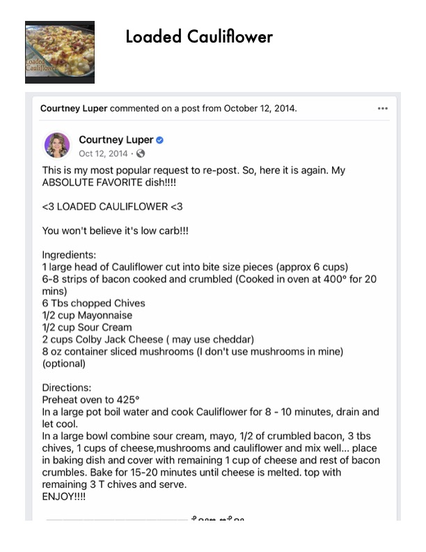

Loaded Cauliflower

Original cookbook page 189
A low-carb loaded cauliflower bake described as the author's 'ABSOLUTE FAVORITE dish.' A popular keto-friendly alternative to loaded potatoes.
Prep: 15 minutes • Cook: 25-30 minutes • Total: 45-50 minutes
Ingredients
- 1 large head of cauliflower, cut into bite-size pieces (approx 6 cups)
- 6–8 strips of bacon, cooked and crumbled (cooked in oven at 400° for 20 mins)
- 6 Tbsp chopped chives
- ½ cup mayonnaise
- ½ cup sour cream
- 2 cups Colby Jack cheese (may use cheddar)
- 8 oz container sliced mushrooms (optional)
Instructions
- Preheat oven to 425°F.
- Boil cauliflower in a large pot of water for 8–10 minutes; drain and let cool.
- Combine in a large bowl: sour cream, mayo, ½ of the crumbled bacon, 3 Tbsp chives, 1 cup of cheese, mushrooms, and cauliflower. Mix well.
- Transfer mixture to a baking dish.
- Top with remaining 1 cup of cheese and rest of the bacon crumbles.
- Bake for 15–20 minutes until cheese is melted.
- Garnish with remaining 3 Tbsp chives and serve.
Recipe #189 from collection